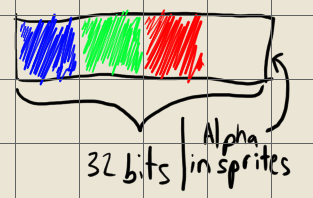
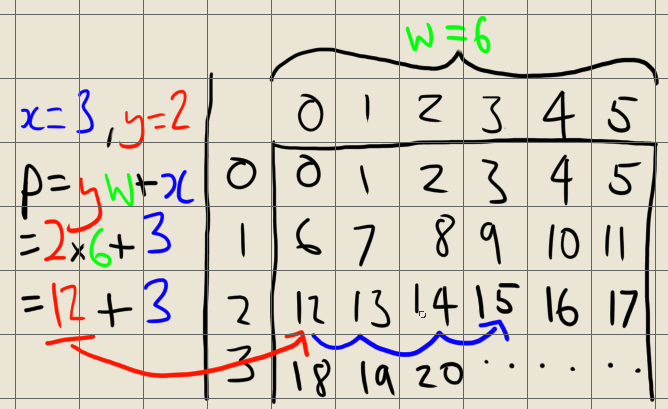

Opening a Window With Xlib
Note: To follow this tutorial you should have a basic understanding of C.
Alright, let's open a window on Linux in C! First let me show you what you'll end up with at the end of this tutorial:
If you're on mobile that might look like a plain black window. Rest assured there is one white pixel moving around near the middle! And don't worry about how choppy that looks - that's just due to the way I recorded the gif.
There's a little bit more in there than just getting a window open. I don't want to waste your time breaking this stuff up into 12 sub-tutorials so I'm putting this all in one. After reading this tutorial you'll have a window with a graphics buffer and keyboard input so you can actually start making things happen on-screen.
Before getting to the code I want to address the API in the room. I've chosen to use Xlib rather than XCB, despite Xlib being "deprecated" and XCB being the new hotness. I've used both for getting a simple game up and running and frankly the XCB documentation is horrendous, the functionality doesn't match Xlib and the API is ugly. Xlib being deprecated doesn't much bother me either because Linux distros are moving towards Wayland. X applications will continue to work inside Wayland too so don't worry about having to learn a new API in a couple of years. Anyway, on with the show.
The full code for this tutorial can be downloaded here: opening_a_window_with_xlib.c
To compile and run that code write the following into a terminal in the same directory as the file:
gcc opening_a_window_with_xlib.c -o bin -lX11
./bin
While reading this tutorial I highly recommend you have the Xlib documentation open: https://www.x.org/wiki/ProgrammingDocumentation/
First thing, let's do the barest minimum to open a window.
#include <X11/Xlib.h>
Display* display;
int root_window;
int screen;
Window window;
void main(){
// Create window
{
display = XOpenDisplay(0);
root_window = DefaultRootWindow(display);
screen = DefaultScreen(display);
window = XCreateWindow(display, root_window, 0, 0, 1280, 720, 0, 0, 0, 0, 0, 0);
XMapWindow(display, window);
XFlush(display);
}
for(;;){}
}
If you're getting an error that Xlib.h was not found then make sure you've installed the X11 development library. On Ubuntu type this in the terminal:
sudo apt install libx11-dev
Not a one-liner but pretty simple in any case. When running this please note the infinite loop near the bottom. Pressing the 'x' in the top of your window won't kill the process, so either hit CTRL+C in the terminal you're running this from or use Gnome System Monitor (or equivalent) to kill the process.
So with this pretty simple code you've got a window open on Linux! I'll just explain a couple of the functions and you can read the Xlib docs if you want details about how XOpenDisplay works.
XCreateWindow is the key function here, and we're not exactly filling it out properly, but we'll fix that next. For now we're giving it the necessary display and parent, size, letting the window manager fill in some details and ignoring everything else. This just gets us an ugly transparent window, but it doesn't actually put it on the screen until we call XMapWindow. This function maps our window to the screen. XFlush makes sure the user's X server receives and processes all our currently pending requests. Without this function call your window may not open at all! Go ahead and try commenting it out to see for yourself.
// Top of code
#include <X11/Xutil.h>
// Replace old XCreateWindow line with this
XVisualInfo visual_info;
XMatchVisualInfo(display, screen, 24, TrueColor, &visual_info);
XSetWindowAttributes window_attributes;
window_attributes.background_pixel = 0;
window_attributes.colormap = XCreateColormap(display, root_window, visual_info.visual, AllocNone);
window = XCreateWindow(display, root_window, 0, 0, 1280, 720, 0, visual_info.depth, 0, visual_info.visual, CWBackPixel | CWColormap, &window_attributes);
Now we've got a window that actually looks like a normal window! First we let the XMatchVisualInfo function fill in an XVisualInfo structure for us. Basically this structure tells the X server that we want 24-bit colour depth (how novel). The very existence of this little setup step is probably due to the history of X.org itself. It was originally created back when computer screens had very limited colour palettes, so even though these days you'll always want 24 bits you still have to take this step.
Then we fill in an XSetWindowAttributes structure. All we need is a background_pixel for the default background of our window and a colormap for all 17 million-odd colours in a 24 bit value. That colormap is another relic from a bygone era and in modern applications will always be the same.
Now we pass the new visual information and attributes. Notice that we have to pass flags before the window attributes structure to let the X server know which attributes we're actually using. Check the documentation for all the flags and attributes you can set. We'll be using another one a little later.
Now let's allow our program to be closed properly. First we need to tell the X server that we want to receive StructureNotify events.
window_attributes.event_mask = StructureNotifyMask;
And inside XCreateWindow we add the CWEventMask flag.
[...], CWBackPixel | CWColormap | CWEventMask, [...]
Now let's handle the event. Replace the for(;;){} infinite loop with this:
// Top of code
#include <stdbool.h>
bool game_running = true;
while(game_running){
XEvent e;
while(XPending(display) < 0){
XNextEvent(display, &e);
switch(e.type){
case DestroyNotify:{
game_running = false;
}break;
}
}
}
Now the game continuously loops, checking for events and handling the DestroyNotify event. Now you can close the window with the X or ALT+F4. However you may notice an error left in the console whenever it closes. It's nothing to worry about and nothing that actually has to be handled, it's just a notice from the X server. However we can close the window more cleanly by handling a different event in the form of an Atom.
// Top of the code
#include <X11/Xatom.h>
Atom WM_DELETE_WINDOW;
// After creating the window
WM_DELETE_WINDOW = XInternAtom(display, "WM_DELETE_WINDOW", False);
XSetWMProtocols(display, window, &WM_DELETE_WINDOW, 1);
// Inside switch(e.type)
case ClientMessage:{
XClientMessageEvent* ev = (XClientMessageEvent*)&e;
if((Atom)ev->data.l[0] == WM_DELETE_WINDOW){
game_running = false;
}
}break;
First we include Xatom, so we can use Atoms. Atoms are just labels for properties inside X. Don't ask me why they're called Atoms instead of labels or something intuitive. That's open source software for you aye? You can create your own atoms and tell X about them in order to transfer certain information, or use preexisting ones. In this case we ask X for the "WM_DELETE_WINDOW" atom, then set the window protocols to just that one. You can set multiple atoms by sending an array and the count of said array.
Then we handle the event. Whenever we receive a ClientMessage event we check to see if it matches our atom then close the game accordingly. Now that ugly error message won't pop up!
Next let's handle some input so we can close the window with the escape key.
// Top of file
#define XK_MISCELLANY
#define XK_LATIN1
#include <X11/keysymdef.h>
// Inside window creation
window_attributes.event_mask = StructureNotifyMask | KeyPressMask | KeyReleaseMask;
// Inside switch(e.type)
case KeyPress:{
int symbol = XLookupKeysym(&e.xkey, 0);
switch(symbol){
case XK_Escape:{
game_running = false;
}break;
}
}break;
case KeyRelease:{
}break;
First we use some defines to pick which keysyms we want to use from keysymdef.h. You can poke around that file to see all the keysyms but for now those two will do. XK_MISCELLANY contains XK_Escape and XK_LATIN1 contains regular keys like the arrows which we'll use later.
Next we tell X that we want to receive KeyPress and KeyRelease events and handle them by looking up the keysym and checking which one it is. I haven't put any code inside the KeyRelease case but I put it there just so you can handle KeyReleases if you want to. We'll also use it later for keeping track of which keys are being held.
Now let's get something on the screen other than a black window!
// Top of file
#include <stdint.h>
#include <stdlib.h>
uint8_t* canvas;
XImage window_image;
GC graphics_context;
// Inside window creation
canvas = (uint8_t*)malloc(1280*720*4);
window_image = XCreateImage(display, visual_info.visual, visual_info.depth, ZPixmap, 0, (char*)canvas, 1280, 720, 32, 0);
graphics_context = DefaultGC(display, screen);
// End of main loop
*((uint32_t*)(canvas) + 128*1280+64) = 0xffffffff;
XPutImage(display, window, graphics_context, window_image, 0, 0, 0, 0, 1280, 720);
I included stdint just so I can use uint8_t and other such types. If you'd rather you can use unsigned char* and the other equivalents but I find the stdint types to be clearer. We create an array of bytes (uint8_t) for the drawing canvas, an XImage to deliver our pixels to the screen and a graphics context. A graphics context is required to enable us to draw to the screen.
Now we allocate memory for our pixels. The 1280*720 is obvious, right? That's the size of the window. But why am I multiplying by 4? Well, each pixel is represented by at least 3 bytes - Blue, Green and Red. That 4th byte in this case is just a buffer to keep the pixels aligned on 32-bit memory addresses but in the case of sprites that last byte will represent the Alpha (transparency) channel.

We create our window_image with pretty standard settings and pass it our pixel array. You can check the documentation for all the arguments but they will pretty much always look like this.
We get the default graphics context, then in our main loop we set a single pixel to 0xffffffff and send our image to the screen. Now you should see one white pixel at the 64,128 coordinate. That line indexing the pixel looks a little crazy so I'll explain.
We cast our canvas to a uint32_t pointer, which is the size of one pixel (4 bytes). To get to our desired pixel from there we just add Y times the Width plus X. Our pixels are stored as horizontal rows so by adding Y times Width that moves us down a number of pixel rows, then adding X gets us across to the correct pixel. Try changing the X and Y coordinates of the pixel to get a better understanding of the math.

Then we dereference that pixel and assign it a value. I wrote the pixel value in hexadecimal for clarity. In hex each byte is visible as a pair of digits, like so: 0xAARRGGBB. Go ahead and mess with that value, try making the pixel green, blue, red and combinations of those colours. Also notice that the AA byte has no apparent effect. In the window canvas those bytes are not used for rendering, but in other pixel arrays they are usually used for alpha (transparency).
Alright, now let's make it interactive! First I replaced all the instances of 1280 and 720 with the variables window_width and window_height.
// Before main loop
int x = 0, y = 0;
// Inside KeyPress switch(symbol)
case XK_Up:{
if(--y < 0){
y = 0;
}
}break;
case XK_Down:{
if(++y >= window_height){
y = window_height-1;
}
}break;
case XK_Left:{
if(--x < 0){
x = 0;
}
}break;
case XK_Right:{
if(++x >= window_width){
x = window_width-1;
}
}break;
// End of main loop
*((uint32_t*)(canvas) + y*window_width+x) = 0xffff0000;
Now we use an x and y variable to index our pixel and move it around with the arrow keys. Of course we have to make sure it doesn't go out of the array bounds or we'll crash, which is what all those if statements are about. That's nice enough, but what about being able to hold an arrow key down to continously move the dot?
// Top of code
bool keyboard[256] = {0};
// Inside KeyPress event
keyboard[(uint8_t)symbol] = true;
// Inside KeyRelease event
keyboard[(uint8_t)symbol] = false;
// Before setting the pixel
if(keyboard[(uint8_t)XK_Up]){
if(--y < 0){
y = 0;
}
}
if(keyboard[(uint8_t)XK_Down]){
if(++y >= window_height){
y = window_height-1;
}
}
if(keyboard[(uint8_t)XK_Left]){
if(--x < 0){
x = 0;
}
}
if(keyboard[(uint8_t)XK_Right]){
if(++x >= window_width){
x = window_width-1;
}
}
We create an array of bools to hold our keyboard values and set them inside the key events. The XK_ values are 16 bits but they all seem to start with 0xff so we can truncate the high byte and index the keys by the low byte. That way we can have a keyboard array of 256 values instead of 65536! In your programs you may want to make some uint8_t const variables like KEY_DOWN = (uint8_t)XK_Down.
There are a couple of hang-ups to be addressed in relation to this method of keyboard handling. If you manage to tab out of the window with a key pressed our program won't be sent the key release event and will still think that key is pressed even after it's released. That's why many games back in the day (and even some today, ESO. . .) will have your character infinitely walking against a wall when you tab out. All we have to do to solve this problem is handle a new event.
// Top of code
#include <string.h>
// Add to window_attributes.event_mask
| FocusChangeMask
// Inside switch(e.type)
case FocusOut:{
memset(keyboard, false, sizeof(keyboard));
}break;
Now when we tab out all the keys will be set to false. Go ahead and try removing/adding the memset line and run the program. Hold an arrow key and click outside the window, then tab back in and you'll see your pixel still drawing a line across the screen.
The other keyboard issue we should solve is key repeat. You may not notice it yet but our program is being sent KeyRelease and KeyPress events over and over whenever a key is held. Key repeats are what allow you to hold the backspace key to erase many letters, but in games they're a pain. It's easy to disable these events with Xlib.
// Top of code
#include <X11/XKBlib.h>
// After window creation
XkbSetDetectableAutoRepeat(display, True, 0);
That's it! Now we'll no longer receive repeat KeyRelease events. We'll still get the KeyPress ones but that shouldn't be a problem. If it is, just check if(!keyboard[(uint8_t)symbol] inside the KeyPress case you're checking.
This one problem is a big reason I chose to use Xlib instead of XCB. You can disable key repeats in a similar amount of code in XCB but it disables key repeats for THE ENTIRE X SERVER! That means you have to re-enable it whenever you tab out or close your program, and if it crashes then your user is left with key repeats disabled until they manually reenable it or run your program again. There are other workarounds but it's a real pain so I just went with Xlib and the XKB extension.
Alright, now let's imagine our little pixel is a character. Well they're leaving an embarrassing streak across the screen so let's clear the pixel buffer every frame before drawing.
// Start of main loop
memset(canvas, 0, window_width*window_height*4);
Good as gold! Now there's only one thing left. What's with all the stuttering? It's a simple program so we should have an excellent framerate right? Well we do (unless you're running loads of programs in the background) but X can't really handle being sent a full-window image 400 times per second. Now let's add some timing code so we can limit how often we're sending our buffer to X, and save our CPU fans from having to wind up to 100% every time the game runs.
First let me show you timespec. Timespec is just a struct that holds an amount of time in seconds and nanoseconds, like so:
struct timespec{
time_t tv_sec;
long tv_nsec;
};
For a time of 12.777000555 seconds, that would look like:
timespec t;
t.tv_sec = 12;
t.tv_nsec = 777000555;
As you can see the nanoseconds are stored as a positive integer, so in order to combine those two values together into nanoseconds you need to multiply tv_sec by 1 billion. To combine them into a value of seconds you must divide tv_nsec by 1 billion. We want to measure in nanoseconds since we'll always be sleeping for some number of nanoseconds, not seconds.
// Top of code
#include <stdio.h>
#include <time.h>
typedef struct timespec timespec;
// Before main loop
timespec frame_start;
timespec frame_finish;
clock_gettime(CLOCK_REALTIME, &frame_start);
unsigned long target_frame_time = 1000000000/60; //60 fps in nano seconds. 1billion nanoseconds / 60 frames
// End of main loop after XPutImage
clock_gettime(CLOCK_REALTIME, &frame_finish);
unsigned long frame_time = (frame_finish.tv_sec - frame_start.tv_sec)*1000000000 + (frame_finish.tv_nsec - frame_start.tv_nsec);
timespec sleep_time;
sleep_time.tv_sec = 0;
sleep_time.tv_nsec = target_frame_time - frame_time;
nanosleep(&sleep_time, 0);
clock_gettime(CLOCK_REALTIME, &frame_finish);
delta = (frame_finish.tv_sec - frame_start.tv_sec) + (frame_finish.tv_nsec - frame_start.tv_nsec)/1000000000.f;
frame_start = frame_finish;
char window_title[30];
sprintf(window_title, "Nick's Xlib window. FPS: %0.02f", 1.f/delta);
XStoreName(display, window, window_title);
That looks a bit complex but it's ulimately pretty simple.
We set our target frame time in nanoseconds (billionths of a second), which is the amount of time we want to elapse per frame. For 60 frames per second, that's 1 billion nanoseconds divided by 60 frames. We take a starting time, then at the end of each frame we get the end time. We calculate how much time we have left until we take up our full frame's time and sleep for that amount.
Then we take the time again to get the true frame ending time and store it in our delta variable, in seconds. For now we're just using delta to show the framerate but in actual game code you'd use that as a factor in your physics/movement/animations to keep things going at the correct speed regardless of framerate.
We set frame_start to frame_finish, then create a char* buffer to store our window title. If you write anything longer than what I have with sprintf you'll have to change the size of the window_title buffer to hold that many characters. XStoreName was seen earlier in the code and lets us use the window title bar to display the framerate. It should say something like "59.60" or so. It won't say exactly 60 simply because real-time timing is difficult on computers. If you end up using a graphics card via an API like OpenGL in the future you'll be able to wait for vblank to synchronize with the monitor's refresh rate but this type of timing serves well enough for CPU-based programs.
I'd say we're in pretty good shape at this point, but before ending this tutorial I'll show you how to handle window resizing. Just a bit of housekeeping aye?
// Inside switch(e.type)
case ConfigureNotify:{
XConfigureEvent* ev = (XConfigureEvent*)&e;
if(ev->width != window_width || ev->height != window_height){
window_width = ev->width;
window_height = ev->height;
XDestroyImage(window_image);
canvas = (uint8_t*)malloc(window_width*window_height*4);
window_image = XCreateImage(display, visual_info.visual, visual_info.depth, ZPixmap, 0, (char*)canvas, window_width, window_height, 32, 0);
}
}break;
You might get an error that "visual_info was not declared in this scope" if you put your window creation code inside its own scope earlier. Just lift that XVisualInfo visual_info; line up out into the main() scope.
Now when we receive a ConfigureNotify event we check if part of that event is changing the width or height of the window. If so we destroy our old window_image, allocate new pixel buffer memory and create the new image. If you're unsure that XDestroyImage is deallocating the pixel buffer memory for us just open Gnome System Monitor, find your program and watch the memory usage while resizing. Mine goes from 2.2mb -> 5.5mb -> 2.8mb -> 10.8mb -> 2.2mb as I make the window larger and smaller, so the memory is certainly being deallocated.
There's one last issue to quickly solve with resizing and that's keeping our x/y values in bounds! When we set our pixel we are taking the pointer to the first pixel on the screen and moving along to our x,y coordinate. If this goes out of the bounds of the pixel buffer we may get an access violation, or worse, we might get no error at all! This would mean we may corrupt other parts of our program's memory without realizing it, so let's do a bounds check on resize.
// Top of file
#define Min(a, b) ((a)<(b) ? (a):(b))
// Inside window resize event
x = Min(x, window_width-1);
y = Min(y, window_height-1);
In practice you'll want to access the pixel buffer with a function like SetPixel(x, y, colour) which has bounds checking built in.
That's it for this tutorial! If you have any issues compiling the code just download the full source and compile that to make sure it works, then examine the differences closely to see what you've done wrong.
Full source code: opening_a_window_with_xlib.c
Please send me an e-mail with the button below if you have any problems with or suggestions for the tutorial, if this tutorial helped you out or if you have requests for future tutorials.
Cheers.
Thanks to Froggie717 and Reddit user Enselic for criticisms and correcting errors in this tutorial.